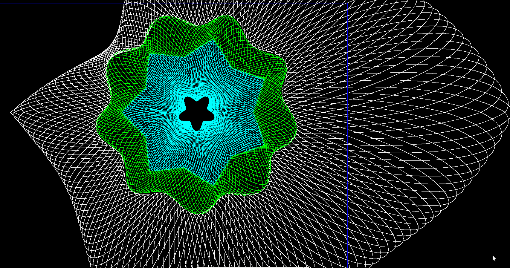

Playing Around With Guilloche Patterns
How about we use our generalized polygon thingamajig to make a rectangular outer envelope function so we can have some round rosettes inside a rectangular field that fills the screen?

See: guilloche16.pde
Hey, that looks all wrong! What happened?